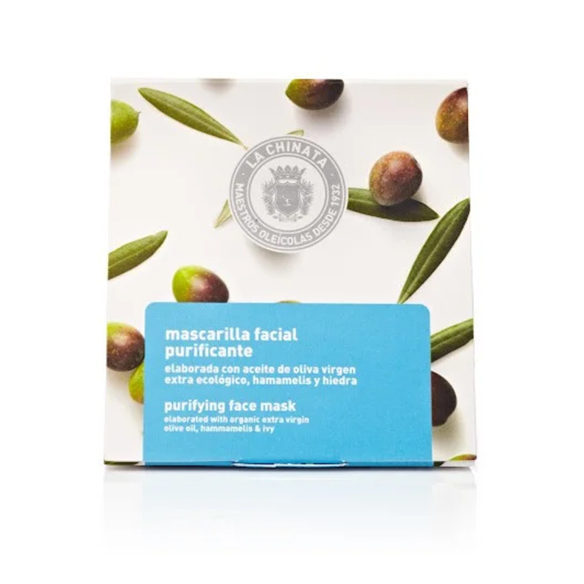

Cosmetic Made in Spain
Language
English
中文
Contáctenos
oferta especial
Necesidades diarias
comida caracteristica
Skin care
LA CHINATA MASCARILLA FACIAL PURIFICANTE

Content: 5 x 8 ml 5€
La Mascarilla Facial Purificante La Chinata está elaborada a base de barros ricos en sales y oligoelementos, que producen una gran hidratación y suavidad en la piel. Además está formulado con activos purificantes y antiseborreicos que limpian, refrescan y descongestionan la piel de nuestro rostro, hidratándola y dejándola tersa y libre de impurezas. La mascarilla purificante es perfecta para pieles apagadas que necesitan luminosidad e intensificar la limpieza semanal del cutis. Así se eliminan las impurezas y se controla la segregación de sebo. Las máscaras intensifican una acción específica y tienen un efecto inmediato. Por eso, es importante elegir la mascarilla adecuada para cada necesidad de la piel, ya que se ajusta a tus demandas específicas; El tipo de mascarilla que necesitemos puede depender de la climatología, de las actividades que hayamos desarrollado, de la exposición solar… Por ello, disponemos de una amplia gama de mascarillas; Efecto lifting, revitalizante, nutritivo e hidratante, además de purificante para dar luminosidad a la piel. Para una correcta aplicación se debe extender una fina capa sobre la piel del rostro y dejar actuar de 10 a 15 minutos. Luego enjuagar con agua tibia hasta retirar todo el producto de nuestro rostro. Se recomienda aplicar al menos una vez por semana. Para un tratamiento completo, después de la mascarilla, se recomienda aplicar el Sérum Facial Regenerador Antiox y posteriormente una de nuestras Cremas Hidratantes La Chinata.
Vida Copyright © 2024 All rights reserved